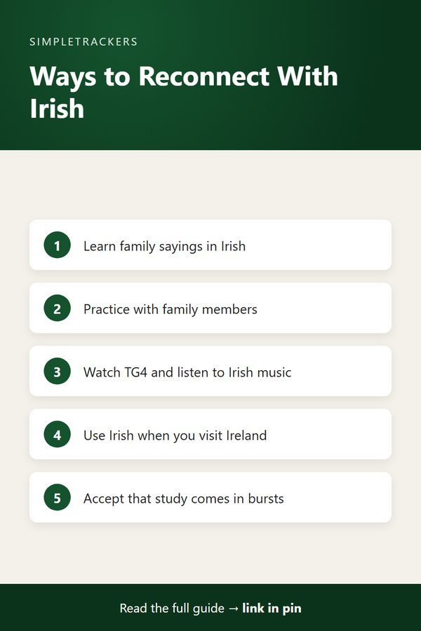

<!doctype html>
<html lang="en">
<head>
<script async src="https://pagead2.googlesyndication.com/pagead/js/adsbygoogle.js?client=ca-pub-7383810158576704" crossorigin="anonymous"></script>
<meta charset="utf-8">
<title>Reconnecting with Irish as a Heritage Learner: More Than Language Study</title>
<meta name="viewport" content="width=device-width, initial-scale=1">
<meta name="description" content="Learning Irish as a heritage learner is about more than language study. How to reconnect with your family&#x27;s language and track your journey.">
<link rel="canonical" href="https://ghengoy.github.io/gaeilge-tracker/reconnecting-with-irish-as-a-heritage-learner.html">
<meta property="og:type" content="article">
<meta property="og:title" content="Reconnecting with Irish as a Heritage Learner: More Than Language Study">
<meta property="og:description" content="Learning Irish as a heritage learner is about more than language study. How to reconnect with your family&#x27;s language and track your journey.">
<meta property="og:url" content="https://ghengoy.github.io/gaeilge-tracker/reconnecting-with-irish-as-a-heritage-learner.html">
<meta property="og:image" content="https://ghengoy.github.io/gaeilge-tracker/images/hero/reconnecting-with-irish-as-a-heritage-learner.jpg">
<meta name="p:domain_verify" content="ed2ca7fb71cecfffeba5d895002ee1d1"/>
<script data-goatcounter="https://ghengoy.goatcounter.com/count" async src="//gc.zgo.at/count.js"></script>
<style>
  :root { --accent: #14532D; --accent-dark: #0B331C; --tint: #E8F2EC; --ink: #1f2328; --muted: #5d6470;
          --line: #e4e1da; --paper: #fbfaf7; --card: #ffffff; }
  * { box-sizing: border-box; }
  body { margin: 0; background: var(--paper); color: var(--ink); font-family: -apple-system, BlinkMacSystemFont, "Segoe UI", Roboto, "Helvetica Neue", Arial, sans-serif;
         font-size: 18px; line-height: 1.75; -webkit-font-smoothing: antialiased; }
  a { color: var(--accent); text-underline-offset: 3px; }
  a:hover { color: var(--accent-dark); }
  img { max-width: 100%; height: auto; }
  .site-header { background: var(--card); border-bottom: 1px solid var(--line); }
  .site-header .inner { max-width: 760px; margin: 0 auto; padding: 14px 20px; display: flex; align-items: center; justify-content: space-between; gap: 16px; flex-wrap: wrap; }
  .brand { font-weight: 700; color: var(--ink); text-decoration: none; font-size: 17px; display: flex; align-items: center; gap: 10px; }
  .brand-mark { width: 28px; height: 28px; border-radius: 8px; background: var(--accent); display: inline-block; position: relative; }
  .brand-mark::after { content: ""; position: absolute; left: 7px; top: 8px; width: 14px; height: 3px; background: #fff; border-radius: 2px;
                       box-shadow: 0 5px 0 #fff, 0 10px 0 rgba(255,255,255,.6); }
  .site-header nav { display: flex; gap: 18px; font-size: 15px; }
  .site-header nav a { color: var(--muted); text-decoration: none; }
  .site-header nav a:hover { color: var(--accent); }
  main { max-width: 760px; margin: 0 auto; padding: 32px 20px 56px; }
  article > h1, main > h1 { font-size: clamp(30px, 5vw, 42px); line-height: 1.2; letter-spacing: -0.02em; margin: 8px 0 12px; }
  h2 { font-size: 27px; line-height: 1.3; letter-spacing: -0.01em; margin: 52px 0 14px; padding-top: 6px; scroll-margin-top: 16px; }
  h3 { font-size: 21px; line-height: 1.35; margin: 32px 0 8px; }
  p { margin: 0 0 20px; }
  ul, ol { padding-left: 1.3em; margin: 0 0 22px; }
  li { margin-bottom: 8px; }
  li::marker { color: var(--accent); }
  strong { font-weight: 650; }
  .pillar-link { font-size: 15px; margin: 0 0 4px; }
  .pillar-link a { text-decoration: none; }
  .post-meta { color: var(--muted); font-size: 15px; margin: 0 0 24px; }
  .post-hero { margin: 0 0 28px; }
  .post-hero img { width: 100%; aspect-ratio: 16 / 9; object-fit: cover; border-radius: 14px; display: block; background: var(--tint); }
  figcaption { font-size: 13px; color: var(--muted); margin-top: 8px; line-height: 1.5; }
  figcaption a { color: var(--muted); }
  .toc { background: var(--card); border: 1px solid var(--line); border-radius: 12px; padding: 18px 22px 8px; margin: 0 0 32px; font-size: 16px; }
  .toc-title { font-weight: 700; margin: 0 0 8px; font-size: 14px; letter-spacing: .06em; text-transform: uppercase; color: var(--muted); }
  .toc ol { margin: 0 0 10px; }
  .toc li { margin-bottom: 4px; }
  .toc a { text-decoration: none; }
  .key-takeaways, .callout { border-radius: 12px; padding: 20px 24px 6px; margin: 0 0 30px; }
  .key-takeaways { background: var(--tint); border-left: 5px solid var(--accent); }
  .key-takeaways ul { margin-bottom: 14px; }
  .box-title { font-weight: 700; margin: 0 0 8px; font-size: 14px; letter-spacing: .06em; text-transform: uppercase; color: var(--accent-dark); }
  .callout { background: var(--card); border: 1px solid var(--line); border-left: 5px solid var(--accent); }
  .callout.note { border-left-color: #b7791f; }
  .callout.note .box-title { color: #8a5a12; }
  .steps { list-style: none; counter-reset: step; padding-left: 0; }
  .steps > li { counter-increment: step; position: relative; padding-left: 52px; margin-bottom: 18px; }
  .steps > li::before { content: counter(step); position: absolute; left: 0; top: 0; width: 34px; height: 34px; border-radius: 50%;
                        background: var(--accent); color: #fff; font-weight: 700; font-size: 16px; display: flex; align-items: center; justify-content: center; }
  .table-wrap { overflow-x: auto; margin: 0 0 28px; border: 1px solid var(--line); border-radius: 12px; background: var(--card); }
  table { border-collapse: collapse; width: 100%; font-size: 16px; line-height: 1.5; }
  th, td { text-align: left; padding: 12px 16px; border-bottom: 1px solid var(--line); vertical-align: top; }
  th { background: var(--tint); color: var(--accent-dark); font-weight: 700; }
  tr:last-child td { border-bottom: 0; }
  .pin-figure { margin: 36px auto; max-width: 400px; text-align: center; }
  .pin-figure img { border-radius: 12px; box-shadow: 0 10px 30px rgba(0,0,0,.12); display: block; }
  blockquote { margin: 0 0 24px; padding: 4px 0 4px 20px; border-left: 3px solid var(--line); color: var(--muted); font-style: italic; }
  .post-cta { display: flex; gap: 24px; align-items: center; background: var(--card); border: 1px solid var(--line); border-top: 5px solid var(--accent);
              border-radius: 14px; padding: 24px; margin: 48px 0 8px; }
  .post-cta img { width: 150px; border-radius: 10px; flex-shrink: 0; }
  .post-cta h3 { margin: 2px 0 6px; }
  .post-cta p { margin-bottom: 12px; font-size: 16px; }
  .cta-kicker { font-size: 13px !important; letter-spacing: .06em; text-transform: uppercase; color: var(--muted); margin: 0 !important; }
  .buy-button { display: inline-block; background: var(--accent); color: #fff !important; padding: 12px 22px; border-radius: 10px; text-decoration: none; font-weight: 700; font-size: 16px; }
  .buy-button:hover { background: var(--accent-dark); }
  .product-box { background: var(--card); border: 1px solid var(--line); border-radius: 14px; padding: 24px; margin: 24px 0 36px; display: grid; grid-template-columns: 200px 1fr; gap: 0 24px; align-items: center; }
  .product-box img { width: 200px; border-radius: 10px; grid-row: span 3; }
  .product-box h3 { margin: 0 0 6px; }
  .product-box p { margin-bottom: 12px; font-size: 16px; }
  .product-grid { display: grid; grid-template-columns: repeat(auto-fill, minmax(160px, 1fr)); gap: 16px; margin: 12px 0 36px; }
  .product-card { display: flex; flex-direction: column; gap: 4px; background: var(--card); border: 1px solid var(--line); border-radius: 12px; padding: 12px; color: var(--ink); text-decoration: none; font-size: 15px; line-height: 1.4; }
  .product-card:hover { border-color: var(--accent); }
  .product-card img { width: 100%; border-radius: 8px; margin-bottom: 4px; }
  .product-card span { color: var(--muted); }
  .product-card .price { color: var(--accent); font-weight: 700; }
  .post-list { list-style: none; padding: 0; display: grid; gap: 16px; }
  .post-list li { margin: 0; }
  .post-card { display: flex; gap: 18px; background: var(--card); border: 1px solid var(--line); border-radius: 14px; overflow: hidden; color: var(--ink); text-decoration: none; }
  .post-card:hover { border-color: var(--accent); }
  .post-card img { width: 200px; object-fit: cover; flex-shrink: 0; background: var(--tint); }
  .post-card-text { display: flex; flex-direction: column; gap: 6px; padding: 16px 18px 16px 0; }
  .post-card-text strong { font-size: 19px; line-height: 1.35; }
  .post-card-desc { color: var(--muted); font-size: 15px; line-height: 1.55; }
  .post-card-date { color: var(--muted); font-size: 13px; }
  .site-footer { border-top: 1px solid var(--line); background: var(--card); color: var(--muted); font-size: 15px; }
  .site-footer .inner { max-width: 760px; margin: 0 auto; padding: 28px 20px; display: flex; justify-content: space-between; gap: 16px; flex-wrap: wrap; }
  .site-footer p { margin: 0; }
  @media (max-width: 600px) {
    body { font-size: 17px; }
    h2 { font-size: 23px; margin-top: 40px; }
    .post-cta, .post-card { flex-direction: column; }
    .post-cta img { width: 120px; }
    .post-card img { width: 100%; aspect-ratio: 16 / 9; }
    .post-card-text { padding: 0 16p
<header class="site-header"><div class="inner">
<a class="brand" href="index.html"><span class="brand-mark" aria-hidden="true"></span>Irish Self-Study</a>
<nav><a href="index.html">Guides</a><a href="pillar-guide.html">Start here</a></nav>
</div></header>
<main>
<article>
<h1>Reconnecting with Irish as a Heritage Learner: More Than Language Study</h1>
<p class="pillar-link"><a href="pillar-guide.html">&larr; Back to the Complete Irish Gaelic Study Guide</a></p>
<p class="post-meta"><time datetime="2026-08-11">August 11, 2026</time> &middot; 5 min read</p>
<figure class="post-hero"><figcaption>Photo: <a href="https://www.flickr.com/photos/87690240@N03/14257004940" rel="nofollow">Giuseppe Milo (www.pixael.com)</a>, <a href="https://creativecommons.org/licenses/by/2.0/" rel="license nofollow">CC BY 2.0</a></figcaption></figure>
<div class="key-takeaways">
<p class="box-title">Key takeaways</p>
<ul>
<li><strong>It's more than language study:</strong> heritage learning rebuilds a bridge to family history, culture and identity.</li>
<li><strong>Feelings are valid, not roadblocks:</strong> grief, shame and imposter syndrome are common, and many learners move through them.</li>
<li><strong>Bursts are fine:</strong> episodic study still adds up, as long as you keep a record of it.</li>
<li><strong>Anchor study emotionally:</strong> family sayings, conversations with relatives, TG4, Irish music and visits to Ireland.</li>
<li><strong>You belong here:</strong> at any age and any level.</li>
</ul>
</div>
<nav class="toc" aria-label="Contents"><p class="toc-title">In this guide</p>
<ol>
<li><a href="#the-heritage-learner-s-journey">The Heritage Learner's Journey</a></li>
<li><a href="#the-different-kind-of-motivation">The Different Kind of Motivation</a></li>
<li><a href="#heritage-learning-is-episodic-not-linear">Heritage Learning Is Episodic, Not Linear</a></li>
<li><a href="#the-emotional-anchors-of-heritage-learning">The Emotional Anchors of Heritage Learning</a></li>
<li><a href="#tracking-heritage-learning-differently">Tracking Heritage Learning Differently</a></li>
<li><a href="#you-belong-here">You Belong Here</a></li>
</ol></nav>
<h2 id="the-heritage-learner-s-journey">The Heritage Learner's Journey</h2>
<p>Heritage learners are people with Irish ancestry reconnecting with the language their grandparents or great-grandparents spoke. For them, learning Irish is fundamentally different from learning a foreign language for career or casual interest.</p>
<p>It's not just about acquiring vocabulary and grammar. It's about rebuilding a bridge to your culture, your family history, and an identity that was interrupted by emigration, assimilation, or generational drift.</p>
<p>There are many entry points:</p>
<ul>
<li>Maybe your grandmother spoke Irish at home, and you grew up hearing it without learning it.</li>
<li>Maybe you're a fourth-generation Irish American realizing you want to know your heritage more deeply.</li>
<li>Maybe you're visiting Ireland for the first time as an adult and feeling the pull to speak the language of your ancestors.</li>
</ul>
<p>Whatever your entry point, heritage language learning carries emotional weight that classroom language study doesn't.</p>

<h2 id="the-different-kind-of-motivation">The Different Kind of Motivation</h2>
<p>Heritage learners typically have a motivation that classroom learners don't: connection. This is powerful.</p>
<p>A student learning Spanish for travel or career can lose interest when they achieve their goal. A heritage learner studying Irish has a motivation that deepens over time. Each word learned is a thread woven back into your family story. Each conversation in Irish is reclaiming something that was lost.</p>
<h3>Why it can also be harder</h3>
<p>This doesn't mean heritage learning is easy. In some ways, it's harder:</p>
<ul>
<li><strong>Grief.</strong> For a language you never had the chance to learn from birth, for traditions that your family left behind, for the assumption that you'd never "need" Irish and so you weren't taught it.</li>
<li><strong>Shame or imposter syndrome.</strong> "I don't have a right to call myself Irish if I can't speak the language."</li>
<li><strong>Defensiveness</strong> about starting so late or at such a basic level.</li>
</ul>
<div class="callout tip">
<p class="box-title">These feelings aren't roadblocks</p>
<p>They're real and valid. But hundreds of thousands of heritage Irish learners around the world have moved through them and built genuine proficiency in their ancestral language. You can too.</p>
</div>

<h2 id="heritage-learning-is-episodic-not-linear">Heritage Learning Is Episodic, Not Linear</h2>
<p>Heritage learners often have a different pattern of study than other self-taught learners. You might dive intensely into Irish for a few months, then let it rest, then return with renewed energy. Common triggers:</p>
<ul>
<li>Planning a trip to Ireland and wanting to be more prepared.</li>
<li>A conversation with a family member about Irish roots.</li>
<li>Getting inspired by Irish language content on social media.</li>
</ul>
<p>This episodic pattern is fine. It's not a failure; it's realistic. Language learning doesn't require constant, uninterrupted effort to accumulate progress. Twenty hours of study over two months, then a break, then thirty hours over the next month, is perfectly valid learning. Your brain is still consolidating what you've learned during the breaks.</p>
<div class="callout note">
<p class="box-title">The real danger: forgetting what you've done</p>
<p>Six months later, you might forget the progress you made two months ago. This is where tracking becomes essential for heritage learners. A simple log that shows "I studied Irish for 50 hours last year and learned 300 words" reminds you that you're making real progress, even if it doesn't feel constant.</p>
</div>

<h2 id="the-emotional-anchors-of-heritage-learning">The Emotional Anchors of Heritage Learning</h2>
<p>Heritage learners benefit from connecting their study to family and cultural elements that matter to them. This might mean:</p>
<ul>
<li><strong>Learning family stories and sayings in Irish.</strong> If your grandmother had a favorite saying or a story she told, learn it in Irish. This kind of vocabulary has emotional resonance that generic textbook vocabulary doesn't. You're not just learning words; you're learning a piece of your family's voice.</li>
<li><strong>Practicing conversation with family members.</strong> Even if your parents or grandparents don't speak Irish fluently, practicing with them creates connection. If they do speak Irish, regular conversation practice is invaluable and emotionally grounding.</li>
<li><strong>Engaging with Irish cultural media.</strong> Watch TG4 (the Irish language TV channel), listen to Irish music, read Irish news. This isn't just study; it's cultural immersion. You're not learning a "foreign" language; you're reconnecting with a living culture that's part of your heritage.</li>
<li><strong>Visiting Ireland (when possible).</strong> Using Irish while traveling through Ireland, even at a basic level, is deeply motivating. Hearing it spoken around you, seeing it on signs, using it in conversations with shopkeepers and servers: this makes the language real in a way study alone doesn't.</li>
</ul>

<figure class="pin-figure">

<figcaption>Save this summary to Pinterest for later.</figcaption>
</figure>

<h2 id="tracking-heritage-learning-differently">Tracking Heritage Learning Differently</h2>
<p>Heritage learners benefit from tracking elements that other learners might not prioritize. Beyond the standard vocabulary count and study hours, consider tracking:</p>
<div class="table-wrap">
<table>
<thead><tr><th>What to track</th><th>Why it matters</th></tr></thead>
<tbody>
<tr><td>Family stories and cultural practices you've learned in Irish</td><td>Qualitative measures of progress that numbers alone can't capture</td></tr>
<tr><td>Conversations with family members: how many times this month you spoke Irish with a parent, grandparent, or cousin</td><td>Often the most meaningful and memorable learning moments</td></tr>
<tr><td>Cultural engagement: an Irish film watched, an Irish cultural gathering attended</td><td>Part of your learning journey, not separate from it</td></tr>
</tbody>
</table>
</div>
<p>The Irish Gaelic Self-Study Progress Tracker includes optional fields specifically designed for heritage learners: cultural motivation notes, family stories practiced, and minutes spent in conversation with native speakers. These columns give you a way to track the dimensions of learning that matter most to you.</p>

<h2 id="you-belong-here">You Belong Here</h2>
<p>If you're a heritage learner hesitating to begin because you feel like an outsider to Irish or because you're starting "too late," let this be clear: you belong here.</p>
<ul>
<li>The Irish diaspora has always been part of Irish culture.</li>
<li>Your desire to reconnect with your heritage is valid.</li>
<li>Your effort to learn Irish, at any age and at any level, matters.</li>
</ul>
<p>Communities of heritage Irish learners exist everywhere, and they're warm, encouraging, and deeply motivated by the same desire you have: to reclaim a piece of themselves.</p>
<p>Start with the Irish Gaelic Self-Study Progress Tracker at <a href="https://kimnet8.gumroad.com/l/kanmzp">https://kimnet8.gumroad.com/l/kanmzp</a>. Use it to track your journey back to your language and your culture. Every word learned is a small act of reclamation. Every conversation is a bridge back to your roots. This matters.</p>

<aside class="post-cta">

<div><p class="cta-kicker">Make it easy to keep track</p>
<h3>Irish Gaelic Self-Study Progress Tracker</h3>
<p>A ready-to-use spreadsheet and guide for logging your study sessions and seeing real progress.</p>
<p><a class="buy-button" href="https://kimnet8.gumroad.com/l/kanmzp">Get the Tracker &middot; $15.99</a></p></div>
</aside>

</article>
</main>
<footer class="site-footer"><div class="inner">
<p><a href="https://gaeilge-tracker.beehiiv.com/subscribe">Get an email when new guides go live</a></p>
<p>&copy; 2026 <a href="/">SimpleTrackers</a> &middot; <a href="/about.html">About</a> &middot; <a href="/contact.html">Contact</a> &middot; <a href="/privacy.html">Privacy</a></p>
</div></footer> href="https://gaeilge-tracker.beehiiv.com/subscribe">Get an email when new guides go live</a></p>
<p>&copy; 2026 SimpleTrackers</p>
</div></footer>
</body>
</html>
